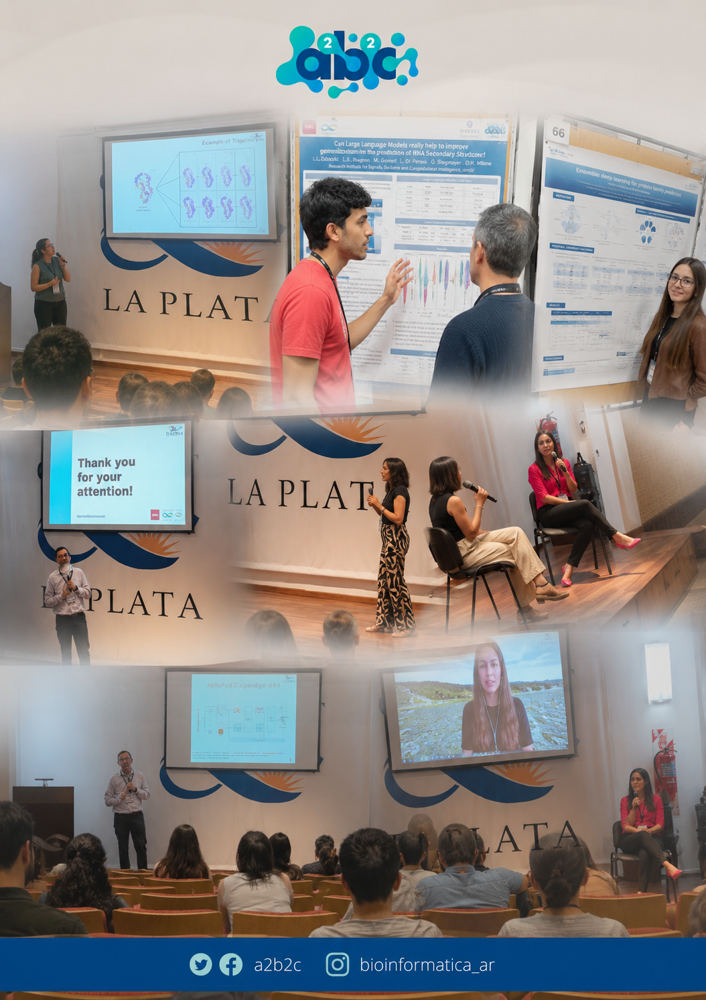
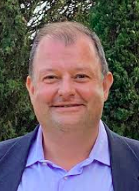
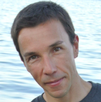
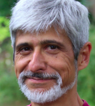
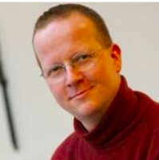
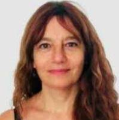
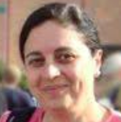
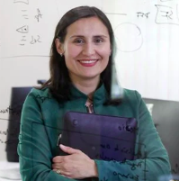

The XV Congress of the Argentine Association for Bioinformatics and Computational Biology (A2B2C) provides a framework to foster the exchange of experiences and initiatives among students, professors, researchers, technicians, and professionals involved in activities related to Bioinformatics and Computational Biology.
Date: November 10–12, 2026
Location: IFIBYNE Auditorium, Ciudad Universitaria, Buenos Aires, Argentina
The plenary lectures and presentations will cover various aspects that bring together the branches of bioinformatics and computational biology with the following thematic tracks:
Language: All abstracts and posters must be submitted in English. All oral presentations and plenary talks will be conducted in English.


Full Professor in Bioinformatics and Principal Investigator at the BioComputing UP lab of the Department of Biomedical Sciences, Università degli Studi di Padova. His research focuses on bioinformatics and computational biology, particularly on the structural and mechanistic aspects of complex biological systems.
Professor of Biochemistry and Molecular Biology at the Universitat Autònoma de Barcelona. His research focuses on protein structure, protein misfolding, conformational diseases, and the development of therapeutic molecules.

Computer scientist specialized in algorithmic robotics and Research Director at CNRS. His interdisciplinary research combines robotics, artificial intelligence, and structural bioinformatics approaches.

Professor of Bioinformatics at Johannes Gutenberg University Mainz. His research interests include computational biology, protein and gene function analysis, and data mining approaches in molecular biology.

Leader of the Molecular Systems Cluster at EMBL-EBI. His work focuses on systems biology resources, molecular interaction databases, pathways, and biological data standardization.

Principal Investigator at CONICET and Head of the Structural Bioinformatics Unit at Fundación Instituto Leloir. Her research focuses on protein structure and evolution, intrinsically disordered proteins, aggregation, and machine learning applications in bioinformatics.

Biochemist and Adjunct Researcher at CONICET. Her research interests include molecular evolution, bioinformatics, and structural biochemistry of proteins.
Researcher at the National Laboratory of Scientific Computing and former President of AB3C. Her work focuses on genomics, metagenomics, transcriptomics, and computational methods for genomics.

Researcher at the Center for Bioinformatics, Simulation and Modeling at Universidad de Talca. Her research focuses on computational structural biology of membrane proteins, molecular modeling, docking simulations, and molecular dynamics.
Victoria Peterson is a CONICET Assistant Researcher at the Institute of Applied Mathematics of the Litoral (IMAL), UNL-CONICET, and an Associate Professor at the Faculty of Chemical Engineering of the National University of the Litoral (UNL). She holds a degree in Bioengineering (2013) from UNER, Argentina, and a PhD in Engineering (2018) from UNL, Argentina. She was a CONICET postdoctoral fellow at IMAL and later a postdoctoral research fellow at Harvard Medical School at Massachusetts General Hospital, Boston, USA. She completed doctoral research stays at ETH Zurich, Switzerland, in 2017 and 2018. Currently, she leads an Applied Computational Neuroengineering group (NiCALab), whose main objective is the development of artificial intelligence (AI) solutions to improve neurotechnologies. Her research interests also include the responsible use of data in matters of gender and algorithmic justice, as well as neuroethics.